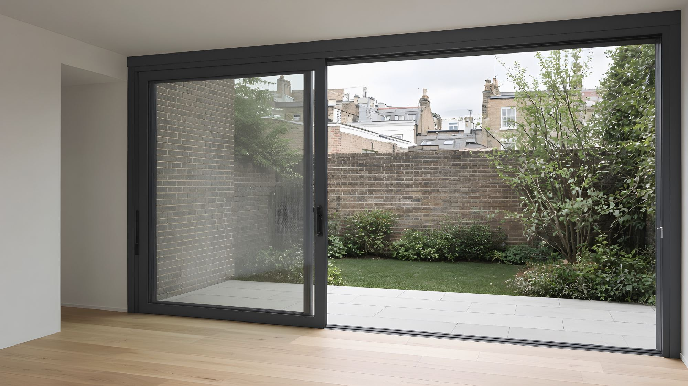

Dwa skrzydła, jedno przesuwne
Najprostszy i najtańszy układ. Jedno skrzydło chowa się za stałym, więc światło przejścia to około połowa szerokości.
Drzwi podnoszono-przesuwne przenoszą bardzo duże skrzydła na rolkach, a po zamknięciu opuszczają je na dociśnięte uszczelki. Dostajesz szeroki otwór ze smukłymi ramami, który pozostaje szczelny i cichy. Projektujemy go razem z Tobą, produkujemy na zamówienie i montujemy.
Dane na tej stronie dotyczą aluminium. Drzwi podnoszono-przesuwne robimy też z drewna i PVC, do mniejszych otworów. Porównaj materiały.

Wszystkie trzy sprawdzą się w londyńskiej dobudowie. Różnią się wielkością skrzydeł, ilością widocznej ramy, szczelnością i tym, jak się z nich korzysta na co dzień. Dla właścicieli domów: poradnik harmonijkowe czy przesuwne?
| Podnoszono-przesuwne | Przesuwne | Harmonijkowe | |
|---|---|---|---|
| Największe skrzydło | Bardzo dużeDo ok. 400 kg i 3,2 m wysokości | DużeZwykle lżejsze klasy okuć | MałeSkrzydła zwykle ≤1,2 m szerokości |
| Widoczna rama po zamknięciu | Jeden smukły styk między skrzydłami | Bardzo smukła w systemach minimalnych | Pionowa rama mniej więcej co metr |
| Szczelność i odporność na pogodę | DoskonałaSkrzydło opada na dociśnięte uszczelki | DobraGłównie uszczelki szczotkowe | DobraWiele styków do uszczelnienia |
| Światło przejścia | 50–67% szerokościPrawie 100% z kieszenią w ścianie | 50–67% | Do ok. 90% |
| Codzienne użytkowanie | Obrót klamki, potem skrzydło płynie | Pchasz i przesuwasz | Składasz każde skrzydło |
| Najlepsze do | Szerokich elewacji ogrodowych, dużego szkła, miejsc wietrznych | Nowoczesnych, minimalistycznych ram, średnich rozmiarów | Otwierania całej ściany latem |
Skrzydło spoczywa na uszczelkach i dociska je własnym ciężarem. Dlatego drzwi podnoszono-przesuwne tak dobrze chronią przed wiatrem, deszczem i hałasem.
Przekładnia w skrzydle unosi je o kilka milimetrów na stalowe rolki. Uszczelki odsuwają się od ramy.
Skrzydło płynie na rolkach po lekkim pchnięciu i można je zostawić w dowolnym miejscu.
Widok z góry. Linie w kolorze akcentu to skrzydła przesuwne, szare to stałe. Układ dobieramy do szerokości otworu, wagi skrzydeł i miejsca, w którym drzwi mają się chować.
Najprostszy i najtańszy układ. Jedno skrzydło chowa się za stałym, więc światło przejścia to około połowa szerokości.
Dwa skrzydła chowają się za jednym stałym i otwierają dwie trzecie szerokości. Dobre, gdy jedna strona musi zostać wolna.
Klasyczna elewacja ogrodowa: symetryczna, a dwa środkowe skrzydła rozsuwają się na boki. Przy szerokich otworach utrzymuje niską wagę skrzydeł.
Do otworów powyżej ok. 7 m. Cztery skrzydła jeżdżą po trzech torach i otwierają dwie trzecie szerokości.
Dwa skrzydła przesuwne spotykają się w narożniku bez słupka, więc róg od strony ogrodu otwiera się całkowicie. Obciążenie narożnika przejmuje wtedy konstrukcja, co uzgadniamy z konstruktorem na etapie koncepcji przestrzennej.
Skrzydła chowają się w ścianę, zostawiając całą szerokość otwartą i żadnej widocznej ramy. Wymaga zaprojektowanej wnęki, więc decyzja musi zapaść wcześnie.
Wpisz otwór konstrukcyjny. Kalkulator oszacuje szerokość skrzydeł, wagę szkła, światło przejścia i potrzeby transportowe, a także sprawdzi regułę 25% dla dobudów z brytyjskich przepisów. To wartości poglądowe, a ostateczne liczby potwierdzamy na rysunkach projektu.
Zakresy, jakie osiąga system podnoszono-przesuwny tej klasy. Dla każdego projektu wydajemy certyfikowane wartości dla konkretnego systemu, wymiaru i szyby, żeby można je było wpisać do specyfikacji i obliczeń energetycznych.
Każdy zakres zastąpimy wartością certyfikowaną z numerem badania po publikacji karty systemu.
| Współczynnik przenikania ciepła całych drzwi (Uw) | ok. 0,9–1,4 W/m²KZależnie od szyby (potrójna lub podwójna) i wymiaru. Wartości graniczne według Approved Document L (brytyjskie przepisy, część L): 1,4 dla drzwi wymienianych w istniejących domach, 1,6 w nowych budynkach. |
|---|---|
| Maksymalna waga skrzydła | 300 kg standard / 400 kg wzmocnioneZależy od klasy rolek i przekładni. |
| Maksymalny wymiar skrzydła | ok. 3300 × 3200 mmWiększe po analizie technicznej. |
| Szerokość styku | od ok. 50 mmOpcja smukłego styku. |
| Głębokość ramy | ok. 160–220 mm2 lub 3 tory. |
| Próg | Bez stopnia (wpuszczony) lub niski ≤15 mmPróg do 15 mm spełnia wymóg dostępności z Approved Document M. |
| Bezpieczeństwo | Do zamówienia wg PAS 24:2022Wymagane dla drzwi w nowych domach według Approved Document Q. |
| Pogoda (BS 6375-1 / EN 12207, 12208, 12210) | Klasy wg raportu z badań systemuDobieramy je do ekspozycji Twojej działki. |
| Akustyka (Rw) | do ok. 40 dBZ asymetryczną szybą akustyczną laminowaną. |
| Szkło bezpieczne | Wszędzie hartowane lub laminowaneDrzwi i doświetla to miejsca krytyczne według Approved Document K. |
Wejście z wnętrza do ogrodu na jednym poziomie to główny powód, dla którego klienci wybierają drzwi podnoszono-przesuwne. Działa to tylko wtedy, gdy płyta, izolacja i odwodnienie są do tego zaprojektowane.
Każdy element z Twojej specyfikacji to dokładnie ten, który zamontujemy. Jeśli kiedykolwiek będzie potrzebna zmiana, poinformujemy Cię na piśmie i pokażemy jej wpływ na parametry i certyfikację, zanim cokolwiek zamówimy.
Powłoka niskoemisyjna, ciepła ramka, argon. Opcje: szyby przeciwsłoneczne na elewacje południowe i zachodnie (ważne dla części O przepisów), akustyczne przy ruchliwych ulicach i pod korytarzami lotniczymi oraz antywłamaniowe laminowane.
Malowanie proszkowe zgodne z uznanym standardem architektonicznym, faktury i maty, a także anodowanie.
Markowe okucia podnoszono-przesuwne dobrane do wagi skrzydła. Klamki smukłe, płaskie lub zamykane na klucz i zamki wielopunktowe.
Większość problemów z dużymi drzwiami przesuwnymi zaczyna się długo przed montażem. Te cztery sprawdzamy na każdym rysunku. Szczegóły opisuje poradnik projektowy.
Nadproże drzwi przesuwnych toleruje ruch rzędu kilku milimetrów. Konstruktor powinien zaprojektować belkę według limitu systemu, a nie tylko według ogólnej proporcji do rozpiętości.
Próg bez stopnia wymaga wpustu w płycie, ciągłej izolacji i odwodnienia na zewnątrz. Wszystko trzeba ustalić przed wylaniem płyty.
Skrzydło o wadze 300 kg nie przejdzie przez wiktoriański korytarz. Trasę od krawężnika do otworu planujemy przy pomiarze, czasem z pozwoleniem na dźwig.
Przeszklenie powyżej 25% powierzchni dobudowy wymaga obliczeń SAP. Nowe domy wymagają też analizy przegrzewania, szkła bezpiecznego i zabezpieczeń PAS 24.
Pracujemy jako część zespołu projektowego, a nie dostawca, który pojawia się dopiero przy przetargu. Każdy etap kończy się czymś, co możesz wykorzystać.
Porada co do układu i wielkości skrzydeł oraz sprawdzenie konstrukcji i dostępu.
→ porada koncepcyjnaRekomendacja systemu, typowe detale nadproża, progu, ościeży i progu bez stopnia oraz limit ugięcia dla konstruktora.
→ detale DWGRysunki warsztatowe, certyfikowane U dla Twoich wymiarów, obciążenia konstrukcji i wycena projektu.
→ rysunki do akceptacjiPomiar na budowie, produkcja według podpisanych rysunków, plan dostawy i montaż.
→ zamontowane i sprawdzoneInstrukcja użytkowania i konserwacji, deklaracje właściwości użytkowych, gwarancja i wizyta kontrolna po pierwszym sezonie.
→ pakiet odbiorowyJeden plik ze wszystkim, czego potrzeba do wyspecyfikowania drzwi. Opublikujemy go po certyfikacji karty systemu. Do tego czasu poproś o niego, a prześlemy aktualne wersje robocze dla Twojego projektu.
| Plik | Format | Status |
|---|---|---|
| Detale nadproża, progu, ościeża i styku | DWG · PDF | W przygotowaniu |
| Detale progu bez stopnia i niskiego | DWG · PDF | W przygotowaniu |
| Obiekt BIM | RVT · IFC | W przygotowaniu |
| Klauzula specyfikacji w stylu NBS | DOCX | W przygotowaniu |
| Karta danych i deklaracja właściwości | W przygotowaniu | |
| Instrukcja montażu i konserwacji | W przygotowaniu |
W praktyce szerokość całkowita nie ma limitu, chodzi tylko o liczbę skrzydeł. Każde skrzydło ma ograniczoną wagę (zwykle do 400 kg) i wymiar (około 3,3 m szerokości). Szerokie otwory to cztery lub sześć skrzydeł. Na początek użyj kalkulatora.
Nie. Gdy skrzydło jest uniesione na rolki, wystarczy lekkie, równe pchnięcie. Podnoszenie wykonuje przekładnia w klamce.
Harmonijkowe otwierają prawie całą szerokość, ale po zamknięciu, czyli przez większość roku, co metr widać ramę. Podnoszono-przesuwne dają większe szkło, smuklejsze ramy i lepszą szczelność, a otwiera się połowa do dwóch trzecich szerokości. Zobacz porównanie.
Tak, jeśli posadzka jest do tego zaprojektowana: wpust w płycie, ciągła izolacja i odwodnienie na zewnątrz. W miejscach wietrznych lub wysoko położonych pewniejszy bywa niski próg do 15 mm, który też spełnia część M przepisów.
Przy dobudowie współczynnik U drzwi musi spełniać wartość graniczną z Approved Document L, a łączne przeszklenie powinno mieścić się w 25% powierzchni dobudowy, żeby skorzystać z prostej ścieżki. Powyżej tej wartości audytor energetyczny używa obliczeń SAP. Nowe domy wymagają też zabezpieczeń PAS 24 (część Q), szkła bezpiecznego (część K) i analizy przegrzewania (część O). Na wszystko dostarczamy dane.
Wiele tylnych dobudów mieści się w tzw. permitted development, ale nie w strefach konserwatorskich objętych dyrektywą Article 4 ani w budynkach zabytkowych. To decyzja Twojego architekta lub urzędu.
Produkujemy je na zamówienie na markowym systemie i montujemy.
To uczciwe pytanie. Odpowiedź tkwi w tym, co możesz sprawdzić: dane systemu, inwentaryzacja i pomiar przed zamówieniem, pisemna kontrola zmian i gwarancja brytyjskiej spółki. Zobacz, jak działają projekty założycielskie.